| 日付 | 2026年6月28日（日） |
|---|---|
| 山域 | 東北の山 |
| メンバー | 家族（妻） |
| 山行形態 | 日帰り |
| アクセス | 車 |
| ルート (Map) | 二岐温泉近くの駐車場 (8:50) - (9:51) 二岐山登山口 - (11:07) 二岐山 (11:40) - (11:56) 女岳 - (12:47) 女岳登山口 - (13:33) 二岐温泉近くの駐車場 |
梅雨に入って天気の悪い日が続いている。先週はどこにも出かけられず、今週末は台風が通過。
関東周辺はどこも雨予報だが、新潟や福島は雨が降らない予報になっている。
次いつ山に行けるかも分からないので、思い切って遠出して福島の山に行ってみる。
目的地は二岐山。那須の北にあるちょっと地味な山だ。
二岐温泉近くの駐車場に到着。標高820m。
途中、高速道路から青空の下の那須岳が眺められ、目的地を変更するか検討したが、
那須岳の予報があまり良くなかったため、予定通り二岐山に来る。
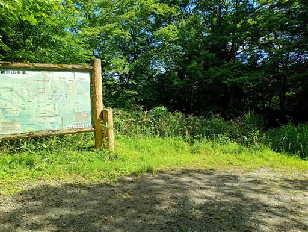
最初は林道を歩いていく。途中で2台の車に追い抜かれる。
周回コースを歩かないのだろうか？
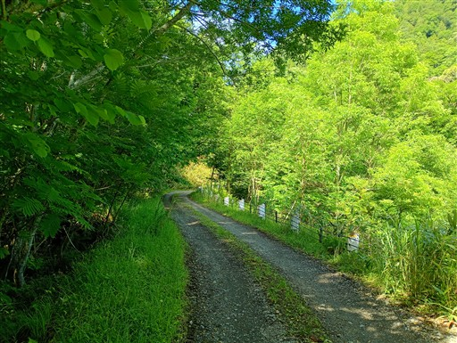
頭上は青空。関東はすさまじくどんよりしていたが、こちらは良い天気だ。
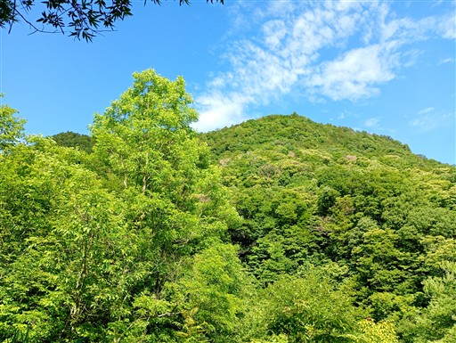
林道を歩いていくと、巨大な駐車場に到着する。
ここがいっぱいになるほど登山者が来ることはまず無いだろう。
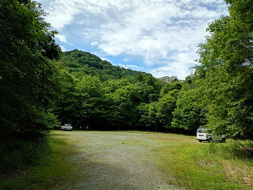
駐車場の奥に、御鍋遊歩道入口がある。寄り道してみる。
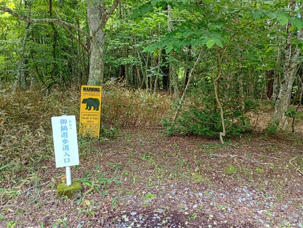
踏み跡は薄いが、一応整備された歩道がある。
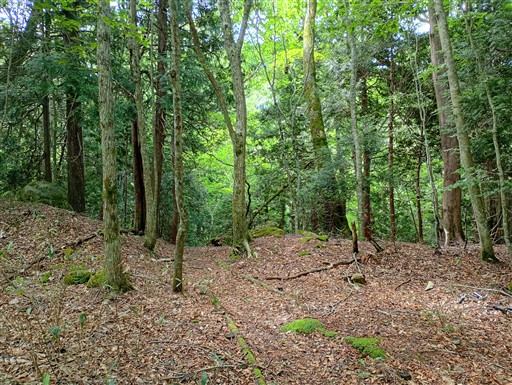
二俣川の畔に下りてくる。美しい渓谷だ。
水の中をジャブジャブ歩くと楽しそう。
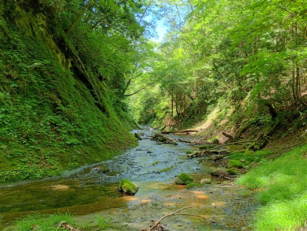
御鍋神社に到着。巨大なサワラが2本立っている。
案内板によると森の巨人たち100選に選ばれているらしい。
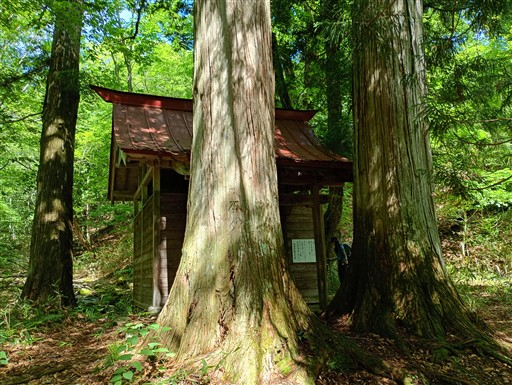
御神体は御鍋。不思議な神社だ。
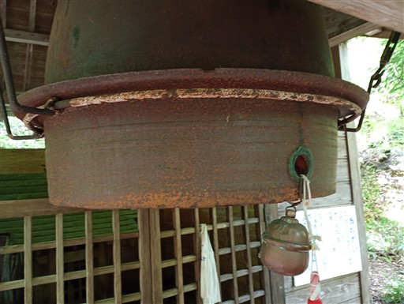
遊歩道から半分ずれた場所に鳥居がある。
かなり古そうで、触れると倒れてきそうだ。
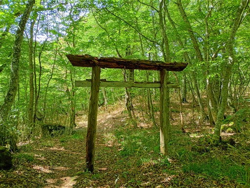
林道に戻って少し歩くと登山口に到着する。
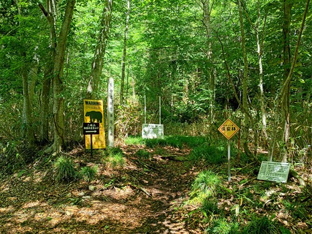
倒木にコケやキノコなど様々な植物が生えている。
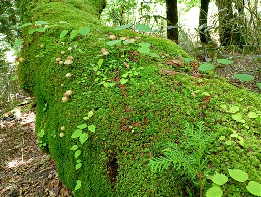
傾斜のきつい道をグングン登っていく。
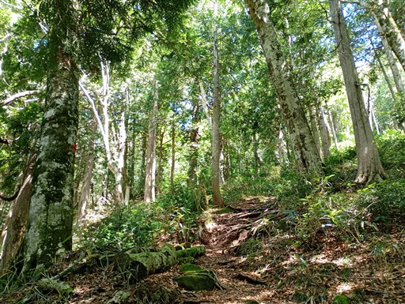
周囲はブナの木が多い。
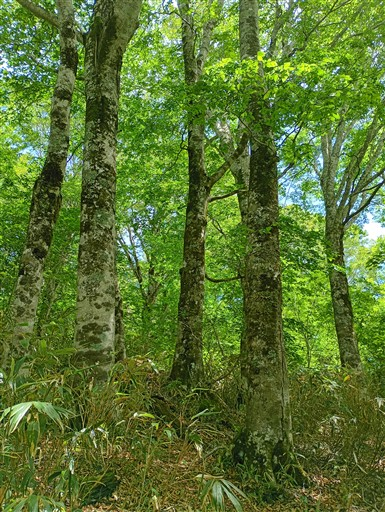
傾斜の緩い場所に出てくる。ちょうど中腹辺りだ。
ブナ平と名付けられている。
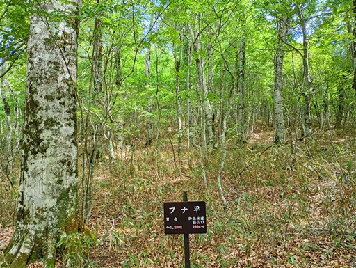
ブナ平を過ぎると再び傾斜がきつくなってくる。
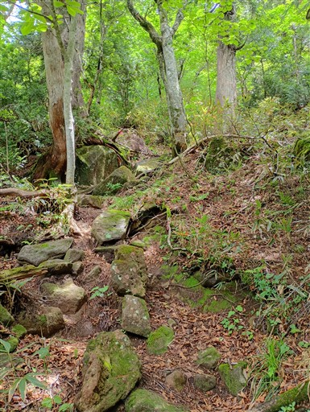
山頂が近づくと灌木帯になり、空が広がってくる。
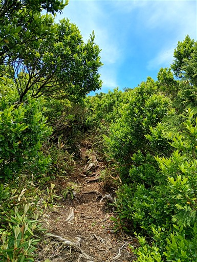
二岐山山頂に到着。標高1544m。
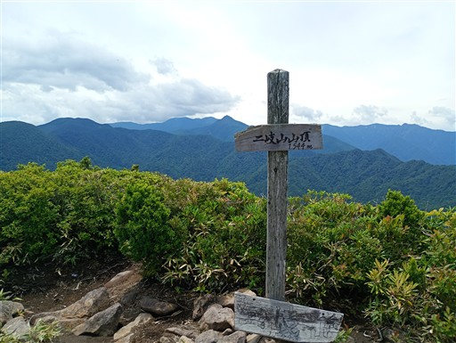
山頂からは360度の大展望が広がる。これまで樹林帯の中で全く
展望が広がらなかったため、一気に視界が広がる。
左手の目立つ山は大戸岳。
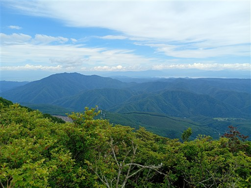
遠くに猪苗代湖が見えている。
残念ながらその奥の磐梯山や安達太良山は雲の中だ。
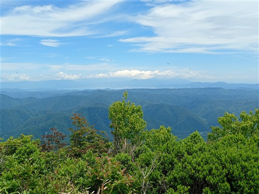
こちらは平凡な景色。
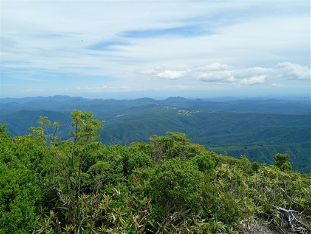
那須連山。こちらはだいぶ雲が出ている。予報は正確だ。
こちらから見る那須はあまりパッとしない。
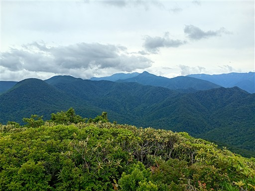
山頂はトンボとハエがやたら多い。
ハエはとにかく音がうるさく、あちらこちらに止まりまくるのでかなり鬱陶しい。
トンボがハエを食べてくれると良いのだが、数が多すぎるのかハエだらけだ。
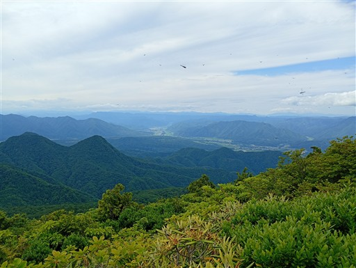
昼食を取ったら下山開始。少し歩くと二岐山のもう一つのピーク・女岳が見えてくる。
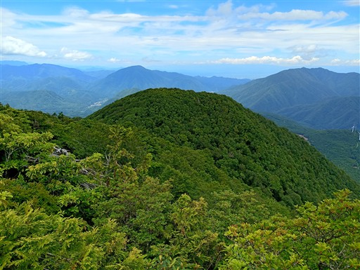
白くて小さな花が咲いている。本日見かけた数少ない花の一つ。
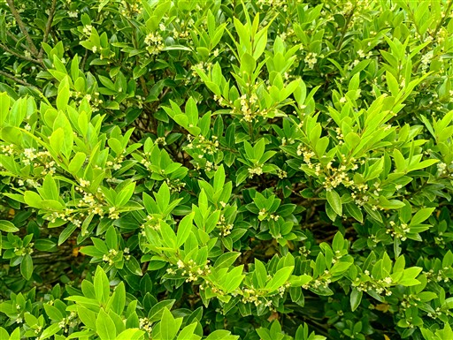
男岳と女岳の鞍部は笹平と呼ばれている。
ブナ平といい笹平といい、安直な名前の付け方だ。
ここは平というほどの平地ではない。
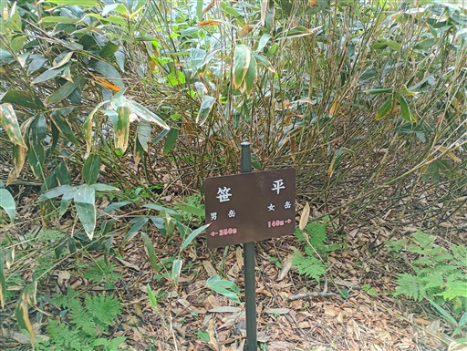
そこから少し登って二岐山の女岳に着く。
山頂というより尾根の途中の小ピークという雰囲気。
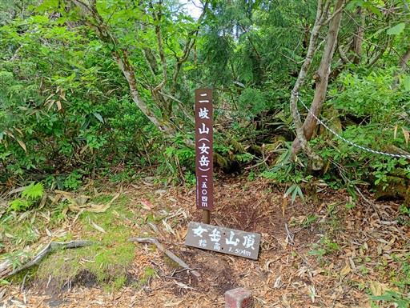
下山中、山頂結婚式記念樹というプレートを見かける。地元の山岳会だろうか？
かなりプライベートな代物だ。
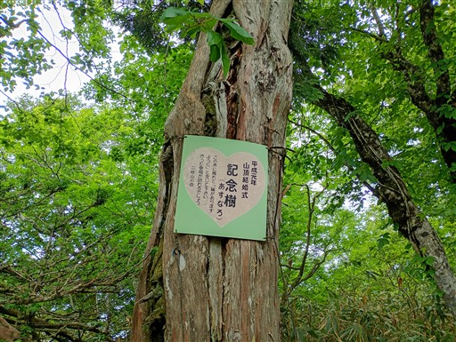
地獄坂の標識。
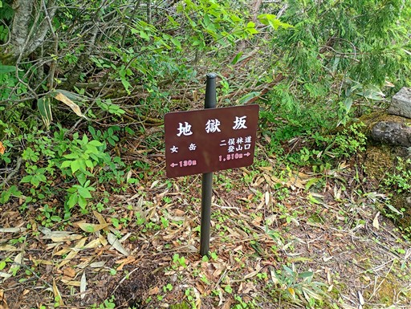
確かに地獄と思えるほどの急斜面の登山道が始まる。
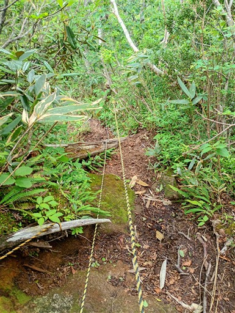
急斜面を慎重に下る。
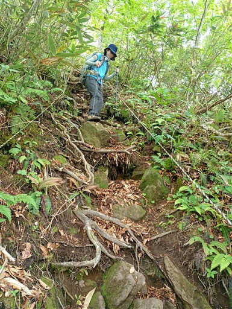
あちらこちらで実がたくさん落ちている。どうやらブナの実のようだ。
昨日の台風の影響だろうか？
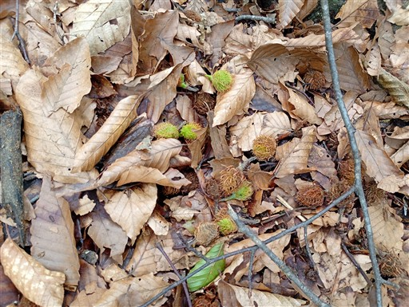
標高を下げると、傾斜がだいぶ緩やかになってくる。
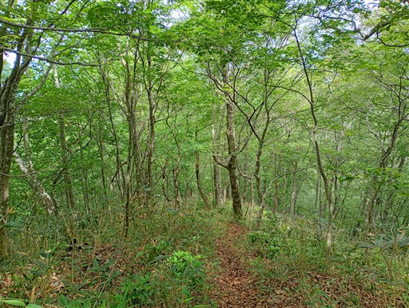
登山口にある鳥居。上の木が落ちてしまっている。二岐明神と書かれている。
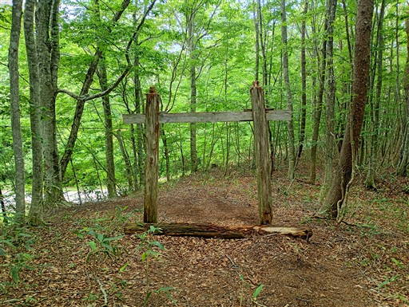
下山。ここから一時間ほど車道歩きだ。
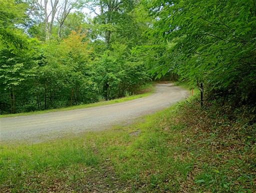
途中から完全な車道になる。若干だけど登りなので足が重い。
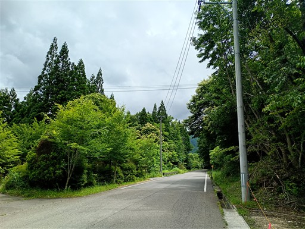
二岐温泉街を通る。14時までと早いが日帰り入浴もできるようだ。
Webで調べた限りだとなかなか良さそうな温泉だ。
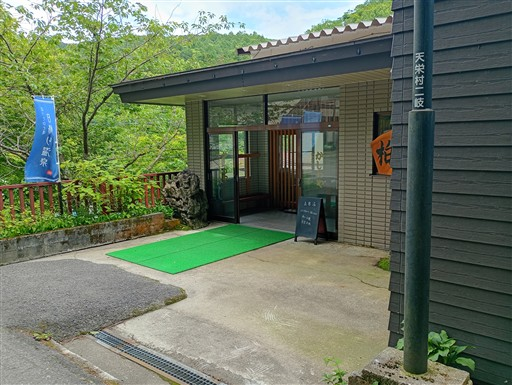
ものすごく鮮やかなシモツケが咲いている。温泉街を抜けて駐車場に戻る。
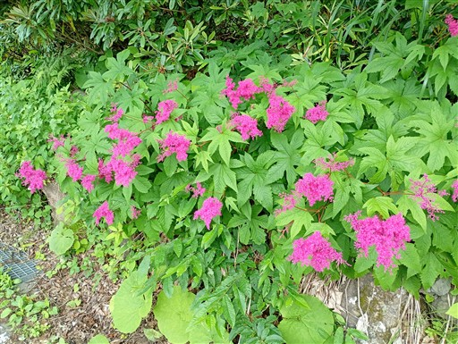
帰りに道の駅羽鳥湖高原に寄ってヤーコンソフトクリームを食べる。
ヤーコンは初めて聞く名だが、この辺りで栽培している芋らしい。
二岐山は思ったより山頂からの展望が開けていて、
登山道の周囲に広がるブナ林も素晴らしく、良い山だった。
帰りの車は大雨で、うまく雨を避けて登山を行うことができた。
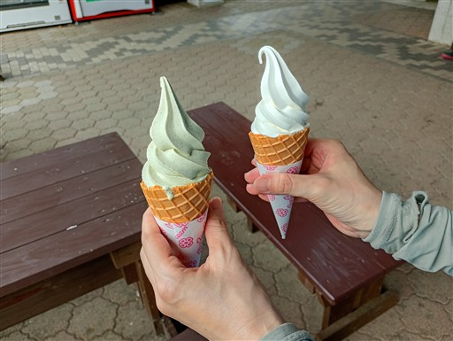